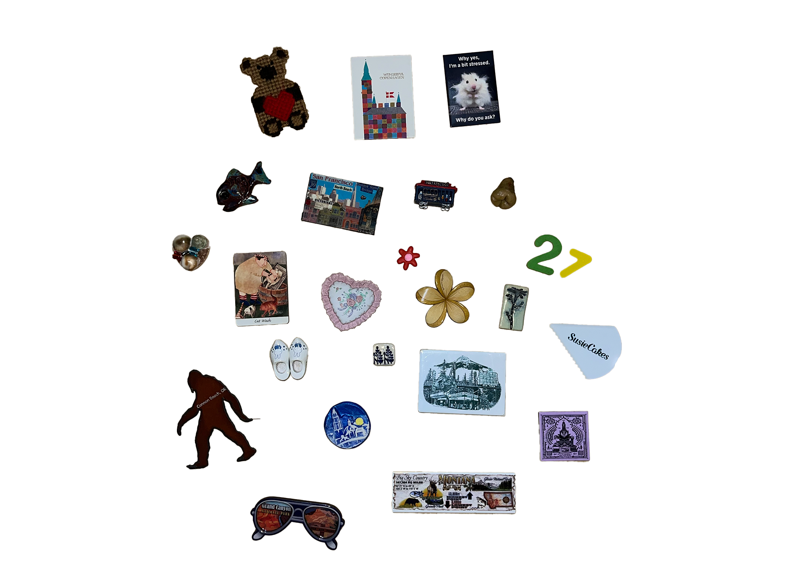

Emma Kittrell
Welcome! My name is Emma Kittrell and I am a senior at the University of San Francisco studying psychology and graphic design. I love many things, but something that encompasses a lot of my hobbies is collecting things. I mainly collect magnets and pins, and I like it because I can get these items when I travel to new places, at thrift stores or flea markets, and whenever else I want! This site shows my three favorite magents and the stories behind them. Below is my whole collection!
